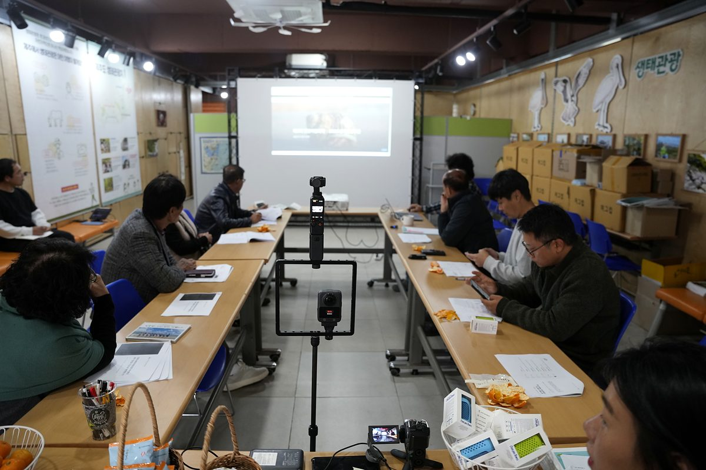
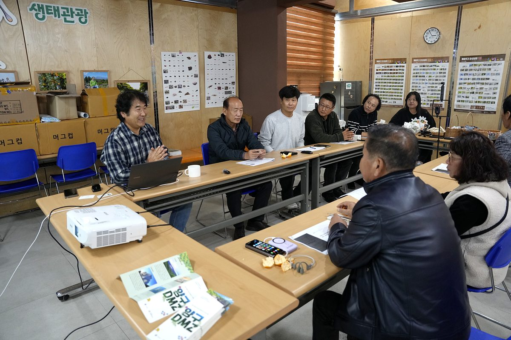
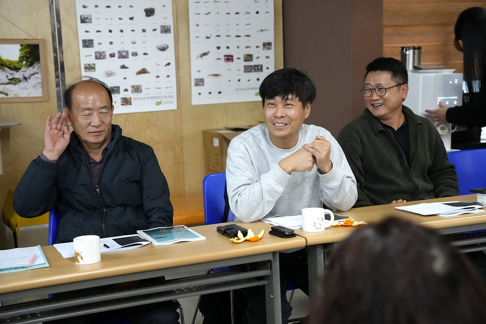
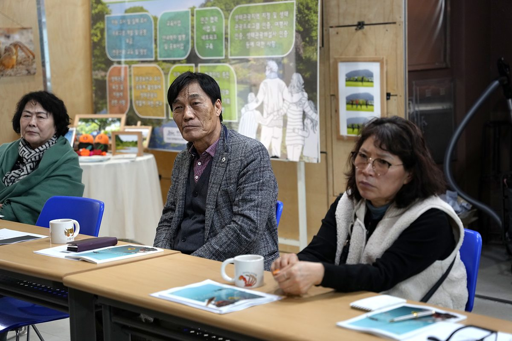
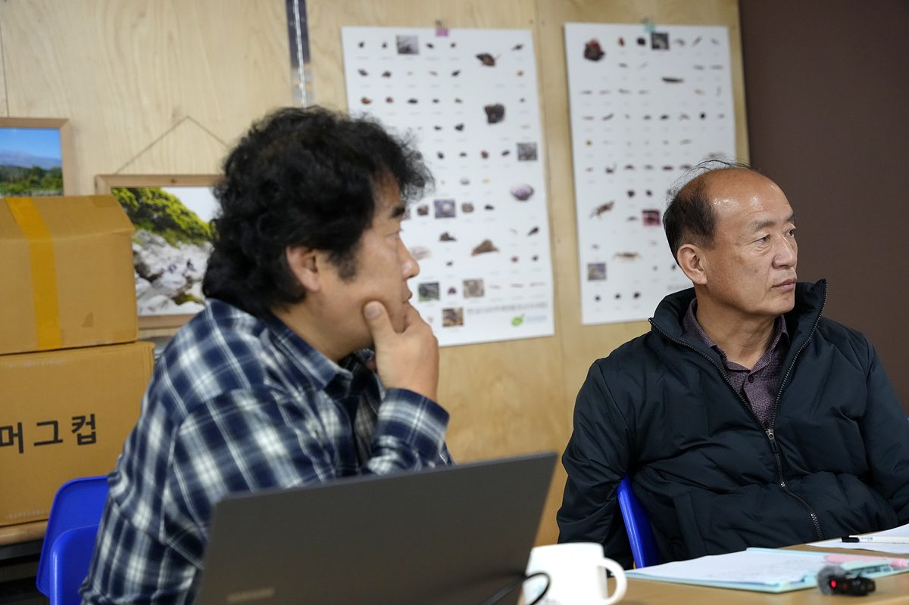
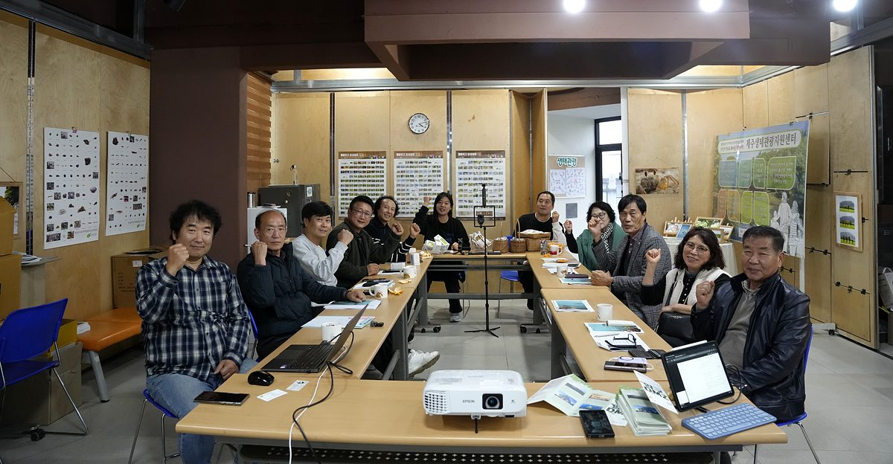
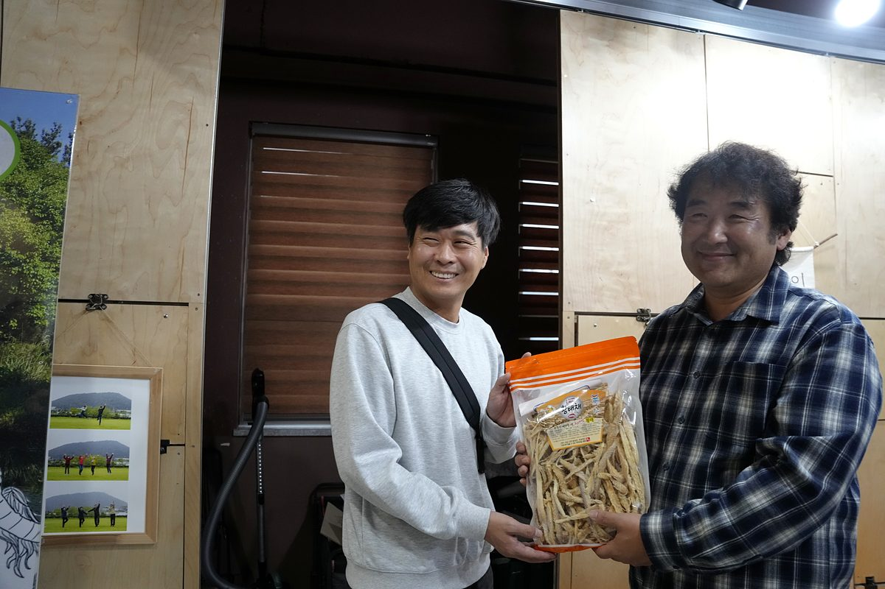

Record · 2026. 11. 17.
강원과 제주, 생태관광을 나누다
강원도생태관광협의회 제주 방문 간담회
강원의 생태관광지역 협의회 관계자들이 광역 생태관광 지원센터 선진지 견학으로 제주생태관광지원센터를 찾았습니다. 제주의 생태관광 정책과 센터 운영을 소개하고, 두 지역이 함께할 수 있는 일을 이야기했습니다.
개요
| 일시 | 2026년 11월 17일(화) 14:30 |
|---|---|
| 장소 | 제주생태관광지원센터 (제주시 조천읍 조함해안로 19) |
| 방문 | 강원도생태관광협의회 — 강원특별자치도 내 생태관광지역 협의회 회장, 사무국장 등 |
| 성격 | 광역 생태관광 지원센터 선진지 견학에 따른 기관 방문과 간담회 |
| 발표 | 「제주 생태관광 정책과 생태관광지원센터 운영」 — 임형묵 제주특별자치도 생태관광지원센터장 |
강원도생태관광협의회는 제주의 생태관광 육성 정책과 광역 지원체계, 주민 주도형 생태관광 운영 사례를 나누고 지역 간 협력 방안을 찾고자 이번 견학을 마련했습니다. 센터는 정책과 주요 사업을 소개하고 간담회를 진행했습니다.
진행
- 맞이와 인사 — 센터 회의실
- 센터 발표 — 제주 생태관광 정책과 생태관광지원센터 운영 (7개 주제)
- 간담회 — 두 지역의 지원 체계와 현장 운영 경험 나누기
- 단체 사진과 센터 전시 둘러보기
사진
사진을 누르면 크게 보이고, '원본'을 누르면 내려받습니다. 공개를 원하지 않는 사진은 문의로 알려 주세요.




















출처
- 사진: 현장 촬영
- 내용: 제주특별자치도 생태관광지원센터 발표 자료 「제주 생태관광 정책과 생태관광지원센터 운영」(2026. 11. 17.), 강원도생태관광협의회 기관 방문 협조 요청(2026. 11. 16.)